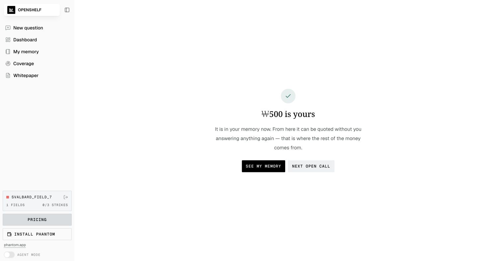
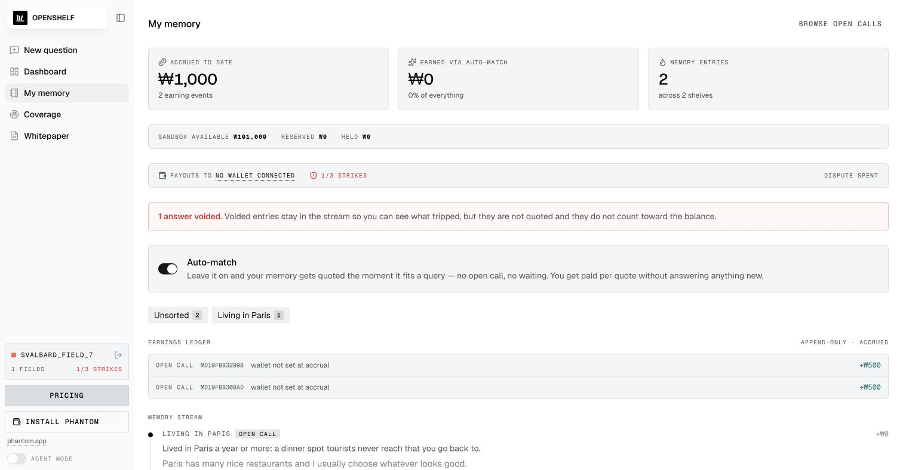

가입 전에 기존 메모리를 검색하고, 원하는 답이 있는지 먼저 확인한다.
검색 실패가 곧바로 ‘질문 주문’으로 바뀐다


1 · MISS 감지
“Ask them”으로 전환
원하지 않으면 바로 종료할 수 있다.
2 · 예산 예약
3명 × ₩500 = ₩1,500
채택분만 지급하고 미사용분은 환불한다.
대시보드는 ‘답할 수 있는 질문’과 ‘답하면 안 되는 질문’을 구분한다

Fits you
타깃과 프로필이 모두 맞을 때만 Answer가 활성화된다.
Outside your fields
분야 밖 질문은 읽을 수 있어도 제출할 수 없다.
가격 순최신 순적합도
돈을 받는 답변은 ‘구체적 경험’이어야 한다
31일 · -27°C · 12시간
실제 숫자가 답변을 검색 가능한 문서로 만든다.
- 실제 장소·시간·숫자
- 내가 한 행동
- 거친 원문 그대로
- 일반론과 요약은 제외
서버 품질 검사통과 시 ₩500

정산으로 끝나지 않는다 — 답변이 ‘내 메모리’에 쌓인다

지급 청구 생성
정확한 Devnet USDC 몫이 검증된 작성자 지갑의 payout claim이 되고, 워커가 확인 후 지급 완료로 바꾼다.
₩500 · OPEN CALL

AUTO-MATCH ON다음 질문에 인용되면 다시 수익
구매자는 답변·상황 밴드·지급 내역을 한 화면에서 받는다

답변 1건
₩500 지급
함께 보이는 것
- 익명 문서 핸들
- 연령·지역·가구·분야
- 실제 인용된 원문
- 지급 금액과 출처
낮은 품질은 숨기지 않고, 제재·이의제기·복구 경로를 남긴다


응답자
근거를 확인하고 이의제기
무효 사유·스트라이크·검토 상태가 메모리 스트림에 남는다.
검토자
복구하거나 제재를 유지
승인하면 문서·슬롯·지급을 함께 복구하고, 거절하면 기존 판정을 유지한다.
자동 판정 → 계정당 1회 이의제기 → 관리자 판정 · 탈퇴 시 프로필과 메모리는 삭제되고 감사 로그는 익명화